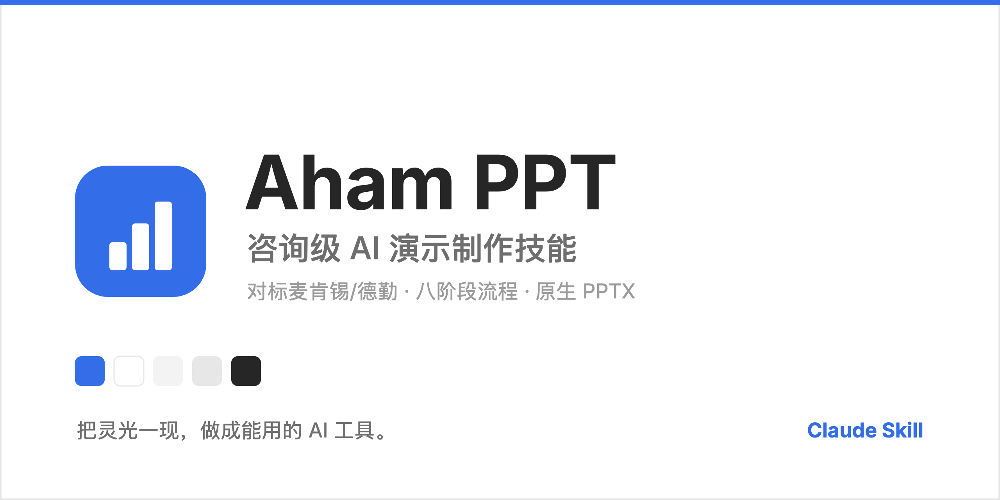

Aham UI
·
Aham Survey
·
Aham Voice
·
Aham PPT

Aham PPT
丢一堆素材，幻灯片出来了。对标麦肯锡/德勤 · 八阶段流程 · 原生 PPTX 输出。
在 GitHub 查看
示例 PPTX ↗
Releases ↗
八阶段流水线
规范加载 → 材料解析 → 论点提炼 → … → 质检交付，不是排版美化
原生可编辑 PPTX
每个元素都是 PPT 原生形状 / 文本框，双击即改
11 页样张
封面 / 看板 / 选型 / 趋势 / 路线 / 大数字 / 架构 / 2×2 / 流程 / 对照 / 深色
换成你的品牌
改 tokens 主色 + 字体 + 品牌名，四步适配